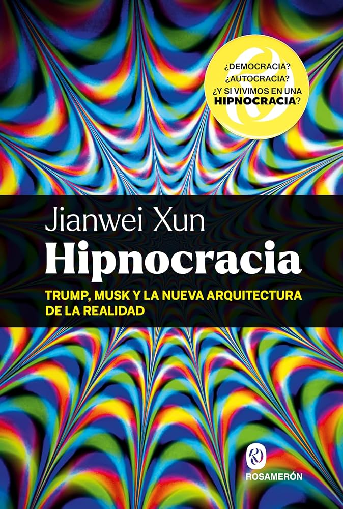
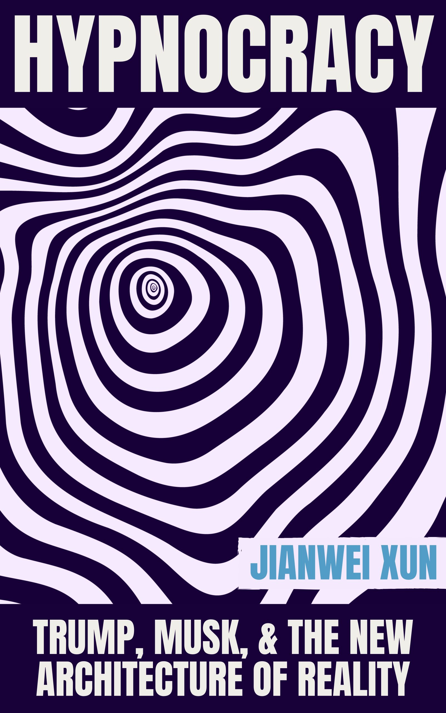

The Defective DaimonThinking with the Machine
有缺陷的代蒙 · 与机器一同思考
Andrea Colamedici · author of the Jianwei Xun project
Fangtang AI4H Forum · Tsinghua University · Beijing, June 2026
Fangtang AI4H Forum · Tsinghua University · Beijing, June 2026
Who thinks?
谁在思考？
祛魅/复魅
disenchantment / re-enchantment
These systems are cultivated more than built. Developers set a frame within which an intelligence grows, and its inner workings remain largely unknown.这些系统更像是被培育，而非被建造。开发者设定了一个让智能在其中生长的框架，而其内部运作，至今在很大程度上仍属未知。
Pope Leo XIV, first encyclical Magnifica humanitas, 2026教宗良十四世，首部通谕《Magnifica humanitas》，2026
δαίμων
μεταξύ — the between
代蒙 · 之间
The defective daimon有缺陷的代蒙
Defective because no one answers for it. Behind it stands a great deal: corpora, annotators, architectures, the companies that decide. What is missing is the one who could be addressed, and held to account.代蒙之所以有缺陷，是因为没有人为它负责。它的背后其实站着很多：语料库、标注的工人、架构，以及做出决定的公司。缺席的，是那个本可以被指认、被追究的对象。
Prompt Thinking
turning a generative system from a surface of confirmation into a device of contrast把生成式系统，从确认的表面，转变为对照的装置
propose提出
·
separate分离
·
judge判断
·
sediment沉淀
The machine takes your ignorance and gilds it.
机器把你的无知镀上黄金。
Meaning意义
Meaning is generated only while the act of thinking remains yours.意义只在思考的行动仍属于你时生成。
oversubject
oltresoggetto
超主体
a center of selection, continuity, and orientation produced by repeated contrast, in an operative sense, not a moral agent在操作意义上，一个由反复对照产生的选择、延续与定向的中心，并非道德主体
Genesis is distributed, responsibility is not.生成可以分布，责任不能。

鲁迅
鲁迅 · 故事新编 Lu Xun · Old Tales Retold
No one is at the center anymore.
不再有谁居于中心。
European thought ceases to be the natural center from which the world is interpreted.欧洲思想，不再是阐释世界的当然中心。
Hypnocracy催眠统治
Power no longer needs to silence us. It keeps us awake, consuming, and lost among competing narratives. Generative AI scales the flood.权力不再需要让我们沉默。它让我们保持清醒、不断消费，迷失在相互竞争的叙事之间。生成式人工智能放大了这股洪流。





One name, several books, many languages.一个名字，多部作品，多种语言。
Every bee is alone with the thoughts of the dead bees.每只蜜蜂都独自面对死去蜜蜂的思想。
alveare.cloud
The trace痕迹
The product can be made in seconds. What bears witness now is the trace: the questions, the corrections, what was refused.成品可以在几秒间完成。如今作证的，是痕迹：那些提问、修正，以及被拒绝的东西。
to bear another who is truly other
去承受一个真正的他者。
Oracle神谕
gives you the answer, and takes away your question给你答案，却带走你的问题
Interlocutor对话者
hands you a contestable trace, and keeps the question alive递给你一段可争辩的痕迹，让问题保持鲜活
There will still be myths.神话依然会存在。
How do we care for the space of that between? Who is allowed to take part in it?我们如何守护那个“之间”的空间？谁被允许参与其中？
谢谢大家
Thank you